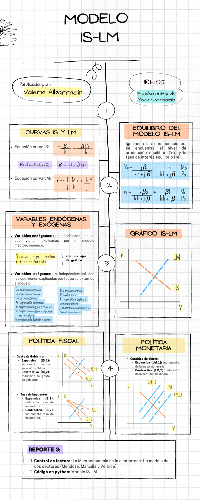
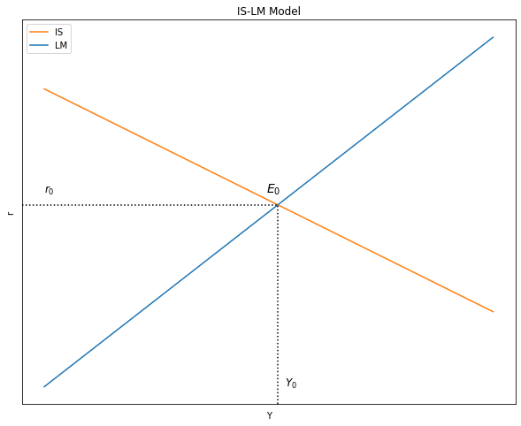
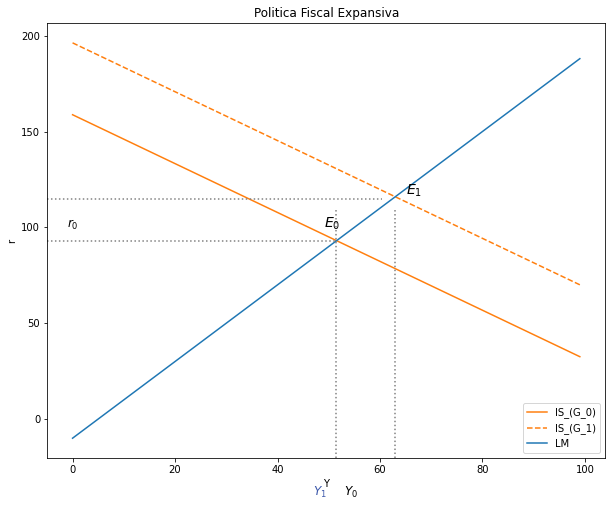
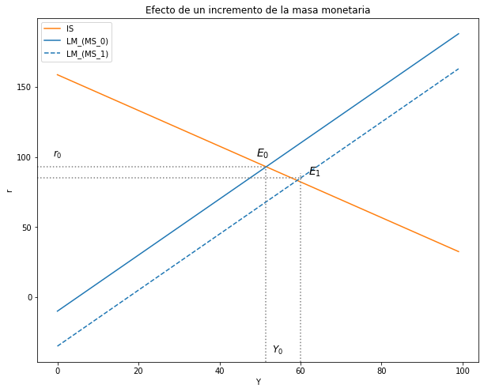

El Modelo Macroeconómico IS-LM
Contents
import ipympl
%matplotlib widget
%matplotlib inline
import ipywidgets as widgets
import matplotlib.pyplot as plt
import numpy as np
import sympy as sy
from sympy import *
import pandas as pd
from causalgraphicalmodels import CausalGraphicalModel
import os
os.environ["PATH"] += os.pathsep + 'C:/Program Files/Graphviz/bin/'
from IPython.display import Image
import warnings
warnings.filterwarnings('ignore')
4. El Modelo Macroeconómico IS-LM¶
Image('tutorial5.png')

4.1. ¿Cómo son las pendientes de las curvas IS-LM?¶
#--------------------------------------------------
# Curva IS
# Parámetros
Y_size = 100
Co = 35
Io = 40
Go = 50
Xo = 2
h = 0.8
b = 0.4
m = 0.5
t = 0.8
Y = np.arange(Y_size)
# Ecuación
def r_IS(b, m, t, Co, Io, Go, Xo, h, Y):
r_IS = (Co + Io + Go + Xo)/h - ( ( 1-(b-m)*(1-t) ) / h)*Y
return r_IS
r_is = r_IS(b, m, t, Co, Io, Go, Xo, h, Y)
#--------------------------------------------------
# Curva LM
# Parámetros
Y_size = 100
k = 2
j = 1
Ms = 200
P = 20
Y = np.arange(Y_size)
# Ecuación
def r_LM(k, j, Ms, P, Y):
r_LM = - (1/j)*(Ms/P) + (k/j)*Y
return r_LM
r_lm = r_LM( k, j, Ms, P, Y)
# Primero declarar los simbolos
Co, Io, Go, Xo, h, r, b, m, t, Y = symbols('Co Io Go Xo h r b m t Y')
# Ecuacion de la curva IS
r_eq_is = (Co + Io + Go + Xo)/h - ( ( 1-(b-m)*(1-t) ) / h)*Y
# tomar diferenciales
df_r_eq_is_y = diff(r_eq_is, Y)
print("La pendiente de la curva IS es", df_r_eq_is_y) # este diferencial es positivo
La pendiente de la curva IS es -(-(1 - t)*(b - m) + 1)/h
# Declaren todos los parametros de la curva lm como simbolos
k, j, Ms, P, Y = symbols('k j Ms P Y')
# Escribir la ecuacion de la LM
r_eq_lm = - (1/j)*(Ms/P) + (k/j)*Y
# TOMAR el diferencial
df_r_eq_lm_y = diff(r_eq_lm, Y)
print("La pendiente de la curva IS es", df_r_eq_lm_y) # este diferencial es positivo
La pendiente de la curva IS es k/j
4.2. El equilibrio en el Modelo IS-LM¶
Por un lado, considerando la ecuación de la curva IS
\[ r = \frac{B_o}{h} - \frac{B_1}{h}Y \]
Donde \( B_0 = C_o + I_o + G_o + X_o \) y \( B_1 = 1 - (b - m)(1 - t) \)
Y, por otro lado, la ecuación de la curva LM:
\[ r = -\frac{1}{j}\frac{Mo^s}{P_o} + \frac{k}{j}Y \]
Podemos igualar, sustituir o reducir ambas ecuaciones para encontrar el nivel de Ingresos equilibrio \((Y^e)\) y la tasa de interés de equilibrio \((r^e)\):
\[ -\frac{1}{j}\frac{Mo^s}{P_o} + \frac{k}{j}Y = \frac{B_o}{h} - \frac{B_1}{h}Y \]
Ingreso de equilibrio:
\[ Y^e = \frac{j B_o}{k h + j B_1} + (\frac{h}{k h + j B_1})\frac{Ms_o}{P_o} \]
Tasa de interés de equilibrio:
\[ r^e = \frac{kB_o}{kh + jB_1} - (\frac{B_1}{kh + jB_1})\frac{Ms_o}{P_o} \]
Estas dos ecuaciones representan el modelo IS-LM
4.2.1. Gráfico del equilibrio en el Modelo IS-LM¶
#--------------------------------------------------
# Curva IS
# Parámetros
Y_size = 100
Co = 35
Io = 40
Go = 50
Xo = 2
h = 0.8
b = 0.4
m = 0.5
t = 0.8
Y = np.arange(Y_size)
# Ecuación
def r_IS(b, m, t, Co, Io, Go, Xo, h, Y):
r_IS = (Co + Io + Go + Xo)/h - ( ( 1-(b-m)*(1-t) ) / h)*Y
return r_IS
r_is = r_IS(b, m, t, Co, Io, Go, Xo, h, Y)
#--------------------------------------------------
# Curva LM
# Parámetros
Y_size = 100
k = 2
j = 1
Ms = 200
P = 20
Y = np.arange(Y_size)
# Ecuación
def r_LM(k, j, Ms, P, Y):
r_LM = - (1/j)*(Ms/P) + (k/j)*Y
return r_LM
r_lm = r_LM( k, j, Ms, P, Y)
# Gráfico del modelo IS-LM
# Dimensiones del gráfico
y_max = np.max(r_lm)
fig, ax = plt.subplots(figsize=(10, 8))
# Curvas a graficar
# Curva IS
ax.plot(Y, r_is, label = "IS", color = "C1") #IS
# Curva LM
ax.plot(Y, r_lm, label="LM", color = "C0") #LM
# Eliminar las cantidades de los ejes
ax.yaxis.set_major_locator(plt.NullLocator())
ax.xaxis.set_major_locator(plt.NullLocator())
# Texto y figuras agregadas
# Graficar la linea horizontal - r
plt.axvline(x=51.5, ymin= 0, ymax= 0.52, linestyle = ":", color = "black")
# Grafica la linea vertical - Y
plt.axhline(y=93, xmin= 0, xmax= 0.52, linestyle = ":", color = "black")
# Plotear los textos
plt.text(49,100, '$E_0$', fontsize = 14, color = 'black')
plt.text(0,100, '$r_0$', fontsize = 12, color = 'black')
plt.text(53,-10, '$Y_0$', fontsize = 12, color = 'black')
# Título, ejes y leyenda
ax.set(title="IS-LM Model", xlabel= r'Y', ylabel= r'r')
ax.legend()
plt.show()

4.2.2. Ecuaciones de equilibrio¶
# Beta_0 y beta_1
beta_0 = (Co + Io + Go + Xo)
beta_1 = ( 1-(b-m)*(1-t) )
# Producto de equilibrio y la tasa de interes de equilibrio en el modelo IS-LM
Y_eq = (k*beta_0)/(k*h + j*beta_1) - ( beta_1 / (k*h + j*beta_1) )*(Ms/P)
r_eq = (j*beta_0)/(k*h + j*beta_1) + ( h / (k*h + j*beta_1) )*(Ms/P)
4.3. Estática comparativa¶
4.3.1. Política Fiscal Expansiva:¶
Mercado de Bienes $\( Go↑ → DA↑ → DA>Y → Y↑ \)$
Mercado de dinero $\( Y↑ → Md↑ → Md>Ms → r↑ \)$
Matemática:
# nombrar variables como símbolos
Co, Io, Go, Xo, h, r, b, m, t, beta_0, beta_1 = symbols('Co Io Go Xo h r b m t beta_0, beta_1')
# nombrar variables como símbolos
k, j, Ms, P, Y = symbols('k j Ms P Y')
# Beta_0 y beta_1
beta_0 = (Co + Io + Go + Xo)
beta_1 = ( 1-(b-m)*(1-t) )
# Producto de equilibrio y la tasa de interes de equilibrio en el modelo IS-LM
r_eq = (k*beta_0)/(k*h + j*beta_1) - ( beta_1 / (k*h + j*beta_1) )*(Ms/P)
Y_eq = (j*beta_0)/(k*h + j*beta_1) + ( h / (k*h + j*beta_1) )*(Ms/P)
df_Y_eq_Go = diff(Y_eq, Go)
print("El Diferencial del Producto con respecto al diferencial del gasto autonomo = ", df_Y_eq_Go) # este diferencial es positivo
El Diferencial del Producto con respecto al diferencial del gasto autonomo = j/(h*k + j*(-(1 - t)*(b - m) + 1))
df_r_eq_Go = diff(r_eq, Go)
print("El Diferencial de la tasa de interes con respecto al diferencial del gasto autonomo = ", df_r_eq_Go) # este diferencial es positivo
El Diferencial de la tasa de interes con respecto al diferencial del gasto autonomo = k/(h*k + j*(-(1 - t)*(b - m) + 1))
Grafica:
#1--------------------------------------------------
# Curva IS ORIGINAL
# Parámetros
Y_size = 100
Co = 35
Io = 40
Go = 50
Xo = 2
h = 0.8
b = 0.4
m = 0.5
t = 0.8
Y = np.arange(Y_size)
# Ecuación
def r_IS(b, m, t, Co, Io, Go, Xo, h, Y):
r_IS = (Co + Io + Go + Xo - Y * (1-(b-m)*(1-t)))/h
return r_IS
r = r_IS(b, m, t, Co, Io, Go, Xo, h, Y)
#2--------------------------------------------------
# Curva LM ORIGINAL
# Parámetros
Y_size = 100
k = 2
j = 1
Ms = 200
P = 20
Y = np.arange(Y_size)
# Ecuación
def i_LM( k, j, Ms, P, Y):
i_LM = (-Ms/P)/j + k/j*Y
return i_LM
i = i_LM( k, j, Ms, P, Y)
#--------------------------------------------------
# NUEVA curva IS: reducción Gasto de Gobienro (Go)
# Definir SOLO el parámetro cambiado
Go = 80
# Generar la ecuación con el nuevo parámetro
def r_IS(b, m, t, Co, Io, Go, Xo, h, Y):
r_IS = (Co + Io + Go + Xo - Y * (1-(b-m)*(1-t)))/h
return r_IS
r_G = r_IS(b, m, t, Co, Io, Go, Xo, h, Y)
# Gráfico
# Dimensiones del gráfico
y_max = np.max(i)
fig, ax = plt.subplots(figsize=(10, 8))
# Curvas a graficar
ax.plot(Y, r, label = "IS_(G_0)", color = "C1") #IS_orginal
ax.plot(Y, r_G, label = "IS_(G_1)", color = "C1", linestyle = 'dashed') #IS_modificada
ax.plot(Y, i, label="LM", color = "C0") #LM_original
# Texto y figuras agregadas
plt.axvline(x=51.5, ymin= 0, ymax= 0.57, linestyle = ":", color = "grey")
plt.axhline(y=93, xmin= 0, xmax= 0.52, linestyle = ":", color = "grey")
plt.axvline(x=63, ymin= 0, ymax= 0.57, linestyle = ":", color = "grey")
plt.axhline(y=115, xmin= 0, xmax= 0.6, linestyle = ":", color = "grey")
plt.text(65,117, '$E_1$', fontsize = 14, color = 'black')
plt.text(49,100, '$E_0$', fontsize = 14, color = 'black')
plt.text(-1,100, '$r_0$', fontsize = 12, color = 'black')
plt.text(53,-40, '$Y_0$', fontsize = 12, color = 'black')
#plt.text(50,52, '$E_1$', fontsize = 14, color = '#3D59AB')
#plt.text(-1,72, '$r_1$', fontsize = 12, color = '#3D59AB')
plt.text(47,-40, '$Y_1$', fontsize = 12, color = '#3D59AB')
#plt.text(69, 115, '→', fontsize=15, color='grey')
#plt.text(69, 52, '←', fontsize=15, color='grey')
# Título, ejes y leyenda
ax.set(title="Politica Fiscal Expansiva", xlabel= r'Y', ylabel= r'r')
ax.legend()
plt.show()

4.3.2. Política Monetaria Expansiva¶
Mercado de dinero $\( Ms↑ → M^o↑ → M^o > M^d → r↓ \)$
Mercado de Bienes $\( r↓ → I↑ → DA>Y → Y↑ \)$
# nombrar variables como símbolos
Co, Io, Go, Xo, h, r, b, m, t, beta_0, beta_1 = symbols('Co Io Go Xo h r b m t beta_0, beta_1')
# nombrar variables como símbolos
k, j, Ms, P, Y = symbols('k j Ms P Y')
# Beta_0 y beta_1
beta_0 = (Co + Io + Go + Xo)
beta_1 = ( 1-(b-m)*(1-t) )
# Producto de equilibrio y la tasa de interes de equilibrio en el modelo IS-LM
Y_eq = (k*beta_0)/(k*h + j*beta_1) - ( beta_1 / (k*h + j*beta_1) )*(Ms/P)
r_eq = (j*beta_0)/(k*h + j*beta_1) + ( h / (k*h + j*beta_1) )*(Ms/P)
df_r_eq_Ms = diff(r_eq, Ms)
print("El Diferencial de la tasa de interes con respecto al diferencial de la masa monetaria = ", df_r_eq_Ms) # este diferencial es positivo
El Diferencial de la tasa de interes con respecto al diferencial de la masa monetaria = h/(P*(h*k + j*(-(1 - t)*(b - m) + 1)))
df_Y_eq_Ms = diff(Y_eq, Ms)
print("El Diferencial del producto con respecto al diferencial de la masa monetaria = ", df_Y_eq_Ms) # este diferencial es positivo
El Diferencial del producto con respecto al diferencial de la masa monetaria = -(-(1 - t)*(b - m) + 1)/(P*(h*k + j*(-(1 - t)*(b - m) + 1)))
#1--------------------------------------------------
# Curva IS ORIGINAL
# Parámetros
Y_size = 100
Co = 35
Io = 40
Go = 50
Xo = 2
h = 0.8
b = 0.4
m = 0.5
t = 0.8
Y = np.arange(Y_size)
# Ecuación
def r_IS(b, m, t, Co, Io, Go, Xo, h, Y):
r_IS = (Co + Io + Go + Xo - Y * (1-(b-m)*(1-t)))/h
return r_IS
r = r_IS(b, m, t, Co, Io, Go, Xo, h, Y)
#2--------------------------------------------------
# Curva LM ORIGINAL
# Parámetros
Y_size = 100
k = 2
j = 1
Ms = 200
P = 20
Y = np.arange(Y_size)
# Ecuación
def i_LM( k, j, Ms, P, Y):
i_LM = (-Ms/P)/j + k/j*Y
return i_LM
i = i_LM( k, j, Ms, P, Y)
# Definir SOLO el parámetro cambiado
Ms = 700
# Generar nueva curva LM con la variacion del Ms
def i_LM_Ms( k, j, Ms, P, Y):
i_LM = (-Ms/P)/j + k/j*Y
return i_LM
i_Ms = i_LM_Ms( k, j, Ms, P, Y)
# Gráfico
# Dimensiones del gráfico
y_max = np.max(i)
fig, ax = plt.subplots(figsize=(10, 8))
# Curvas a graficar
ax.plot(Y, r, label = "IS", color = "C1") #IS_orginal
ax.plot(Y, i, label="LM_(MS_0)", color = "C0") #LM_original
ax.plot(Y, i_Ms, label="LM_(MS_1)", color = "C0", linestyle = 'dashed') #LM_modificada
# Lineas de equilibrio_0
plt.axvline(x=51.5, ymin= 0, ymax= 0.57, linestyle = ":", color = "grey")
plt.axhline(y=93, xmin= 0, xmax= 0.52, linestyle = ":", color = "grey")
# Lineas de equilibrio_1
plt.axvline(x=60, ymin= 0, ymax= 0.55, linestyle = ":", color = "grey")
plt.axhline(y=85, xmin= 0, xmax= 0.6, linestyle = ":", color = "grey")
plt.text(62,87, '$E_1$', fontsize = 14, color = 'black')
#plt.axhline(y=68, xmin= 0, xmax= 0.52, linestyle = ":", color = "grey")
# Textos ploteados
plt.text(49,100, '$E_0$', fontsize = 14, color = 'black')
plt.text(-1,100, '$r_0$', fontsize = 12, color = 'black')
plt.text(53,-40, '$Y_0$', fontsize = 12, color = 'black')
#plt.text(50,52, '$E_1$', fontsize = 14, color = '#3D59AB')
#plt.text(-1,72, '$r_1$', fontsize = 12, color = '#3D59AB')
#plt.text(47,-40, '$Y_1$', fontsize = 12, color = '#3D59AB')
#plt.text(69, 115, '→', fontsize=15, color='grey')
#plt.text(69, 52, '←', fontsize=15, color='grey')
# Título, ejes y leyenda
ax.set(title="Efecto de un incremento de la masa monetaria", xlabel= r'Y', ylabel= r'r')
ax.legend()
plt.show()
